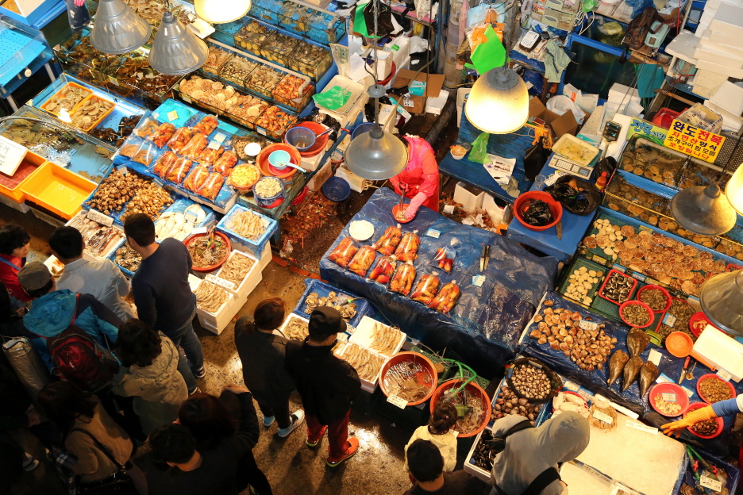
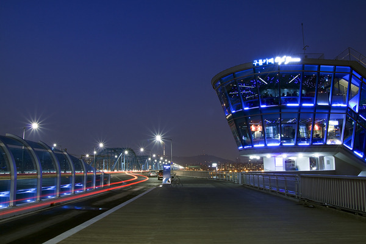
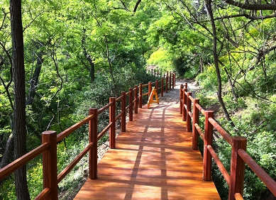
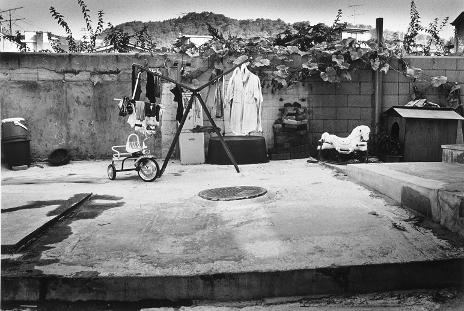
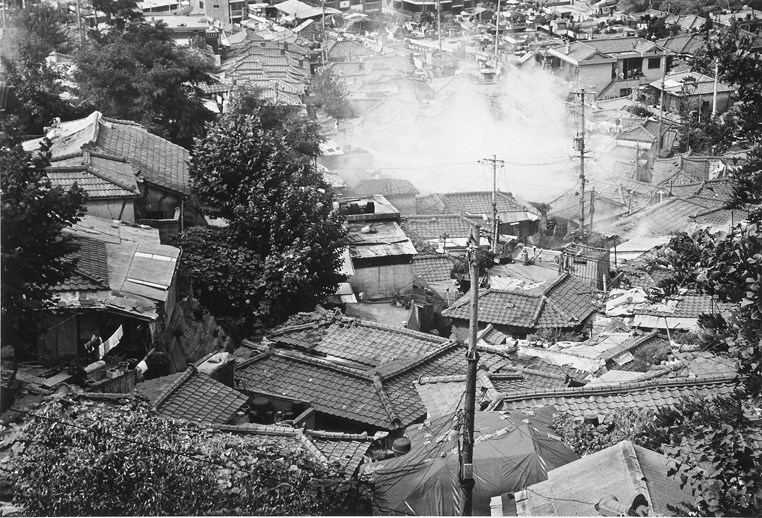
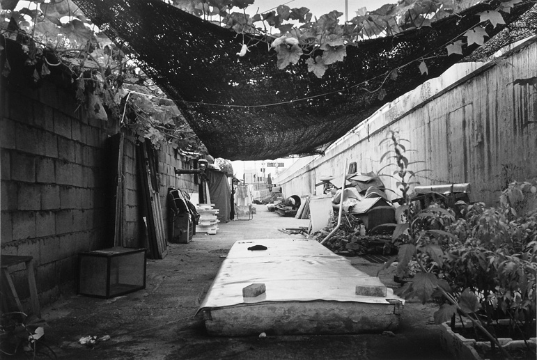
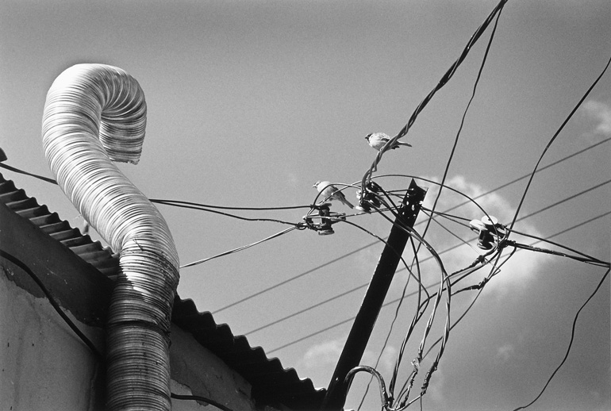

본문바로가기
유틸메뉴
홈
로그인
회원가입
사이트맵
자료검색
자료검색
주메뉴
종합민원
종합민원안내
민원상담
민원신청
민원신고
민원조회
민원사무편람(서식)
행정정보
간행문
예산현황
재정공시
자치법규[새창]
행정정보공개
규제개혁
달라지는 제도
동작통계
행정서비스현장
열린감사
이달의 보고서
종합민원
종합민원안내
민원상담
민원신청
민원신고
민원조회
민원사무편람(서식)
복지정보
동작복지
보육복지
청소년복지
여성복지
어르신복지
장애인복지
저소득주민복지
주거복지
다문화가족
복지시설
복지정보포털(복지로)
생활정보
동작휴양소
건설업길라잡이
교육/취업
교통/주차
문화/체육
민방위교육훈련
부동산/주택/지적
생활/편의
세무
여권
재난/안전
중소기업홍보관
지역경제
청소
환경
열린광장
알림마당(구정소식)
입찰계약정보
네티즌마당
IT희망나눔세상
마을공동체
동재기 나눔장터
지방공기업
사진 공모전
사회적경제지원센터
우리동작
열린구청장실
동작소개
구청안내
홍보자료실
자매결연도시
동작사진자료실
구민상 구민표창
동작스케치
동작풍경
문화유적
옛동작
동작풍경
HOME
사진갤러리
동작스케치
동작풍경

노량진 수산시장 내부

노을카페
국립현충원
사육신묘

동작 충효길
보라매공원

동작구 옛모습

동작구 옛모습

동작구 옛모습

동작구 옛모습
동작구 옛모습
동작구 옛모습
1
2
3
4
5
6
7
8
9
10